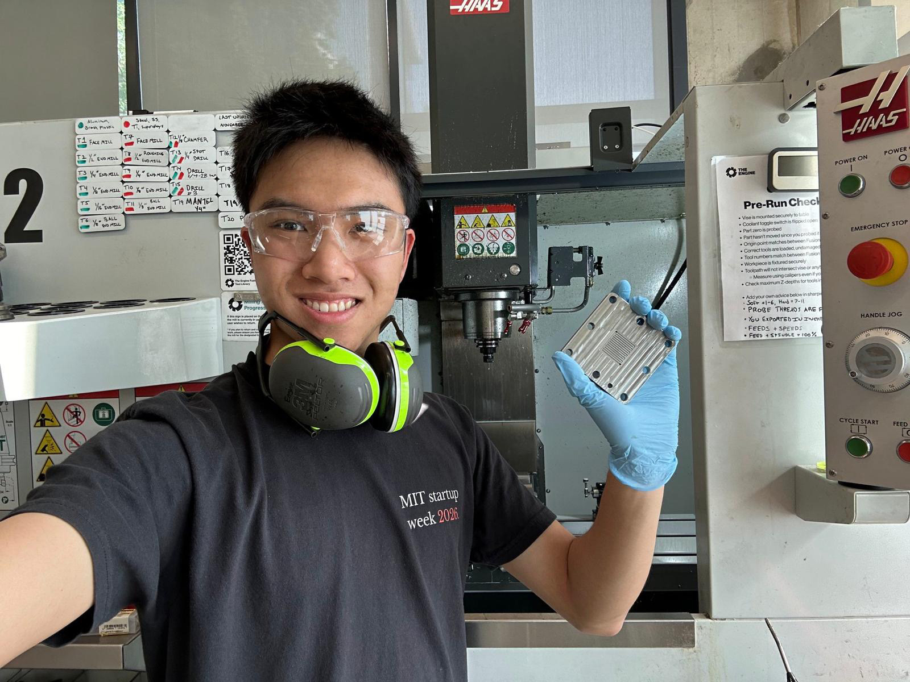
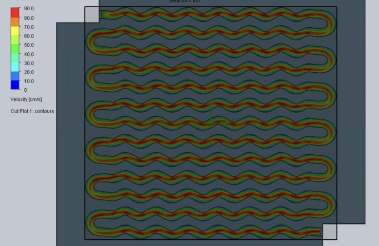
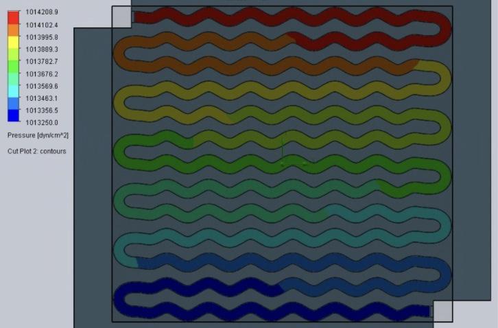
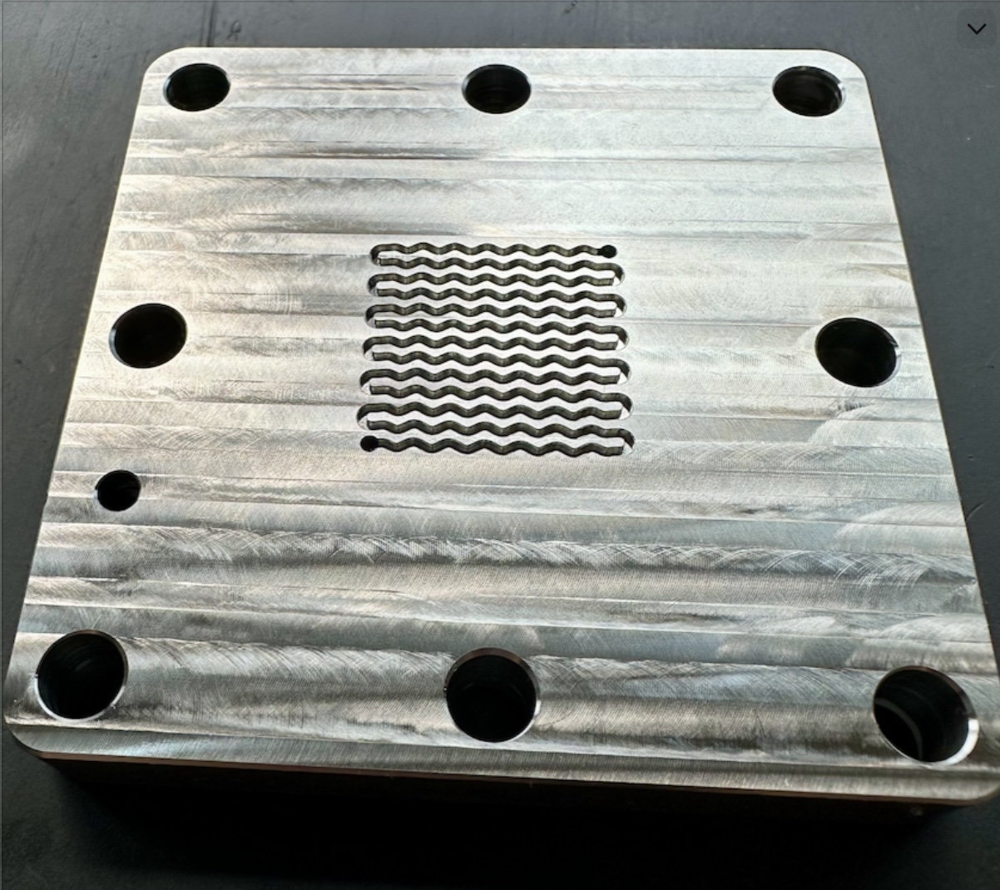
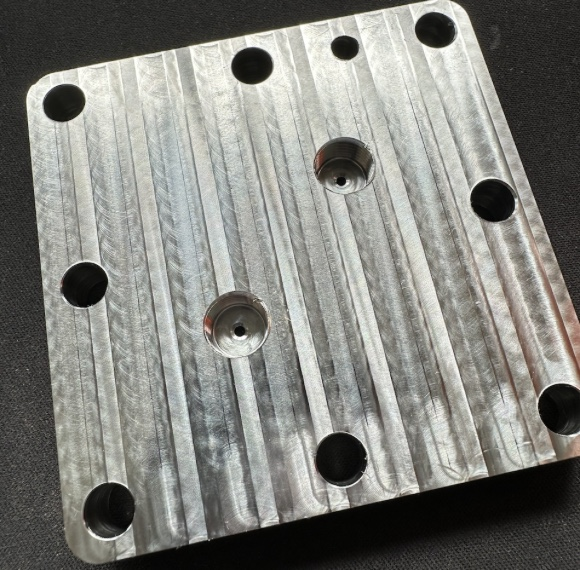

Machined Electrochemical Reactor
Helix Carbon (The Engine, MIT) · Summer 2026. I owned CO₂ electrolyzer flow-field development end to end: parametric geometry, CFD, CAM, and CNC machining on a Haas Super Mini Mill.

Overview
The flow field is the pattern of channels machined into a reactor plate. It carries reactants across the active area of the cell, and its geometry sets how evenly they are spread, how much pressure is lost, and how well products and bubbles are cleared. I owned the flow-field development process from start to finish:
- Generated parametric serpentine geometries in Python
- Converted the designs to CAD and evaluated them in SolidWorks Flow Simulation
- Programmed the toolpaths in Fusion 360 CAM
- Waterjet-cut and CNC-machined the reactors on a Haas Super Mini Mill
CFD: Finding the Optimal Geometry
Before cutting any metal, I ran each candidate geometry through CFD in SolidWorks Flow Simulation. Here are the velocity, pressure and vorticity fields for a sinusoidal serpentine channel. The velocity plot checks that flow stays fast and uniform along the whole path, with no dead zones in the bends. The pressure plot shows a smooth, nearly linear drop from inlet to outlet (about 1 mbar across the field). The vorticity plot shows where the wavy walls stir the flow, which improves mixing and transport toward the electrode.
To iterate faster, I worked with Google engineers to deploy an RTX PRO 6000 GPU compute node on Google Cloud. It cut CFD turnaround by 5×, so I could design, simulate and revise geometries on the same day.


Machined Plates
The chosen geometries were programmed in Fusion 360 CAM and machined from aluminium on the Haas Super Mini Mill. On the left is the sinusoidal serpentine flow field and in the middle a straight serpentine. On the right, the back of a plate shows the counterbored inlet and outlet ports.



Sealing & Stack-Up
A flow field only works if the cell seals and compresses evenly. I validated sealing and stack-up with Fujifilm pressure-indicating paper and custom laser-cut gaskets. I also developed a nickel-foam compression model that relates bolt preload, clamping pressure, foam porosity and plastic collapse. We used it to set the gasket groove depth and the clamping force for the assembled reactor.